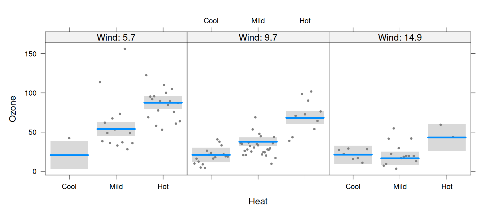
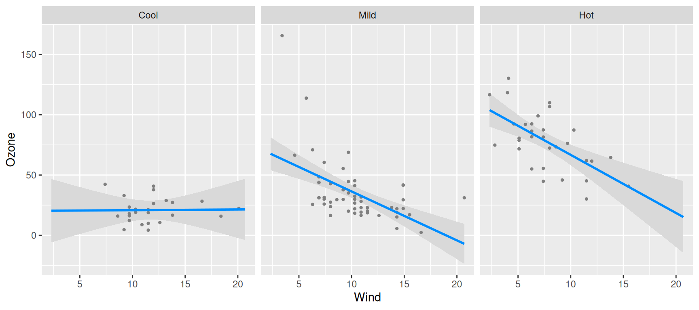
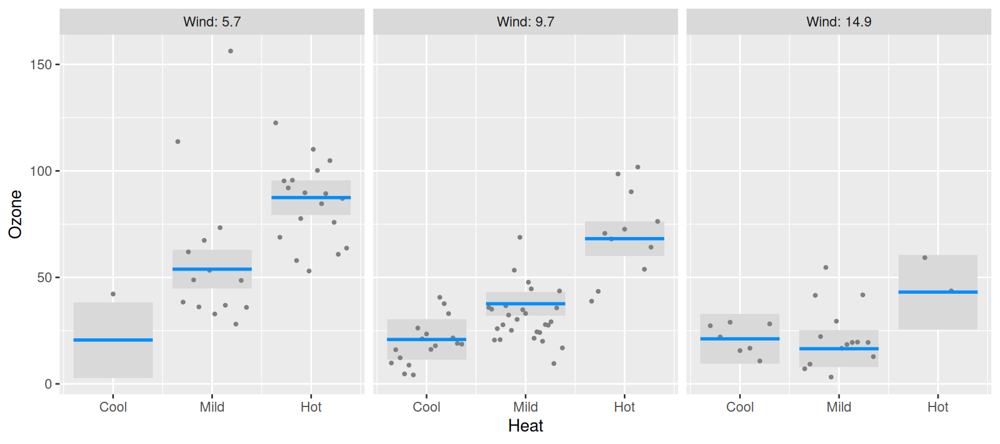
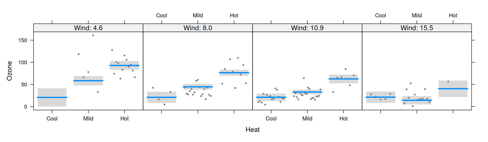
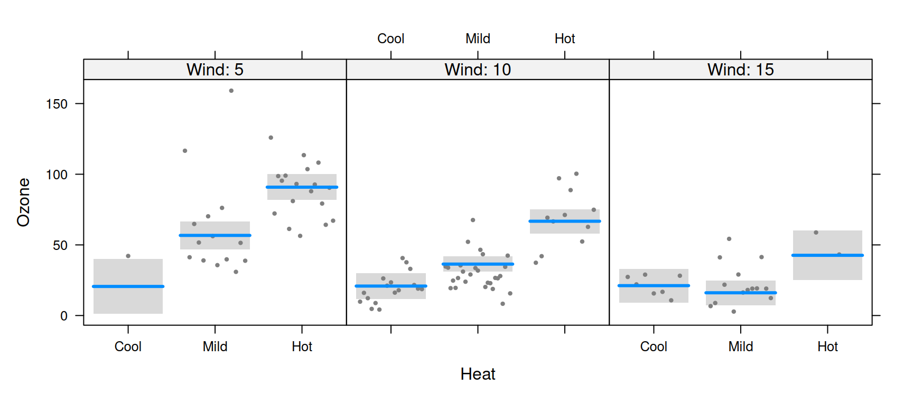
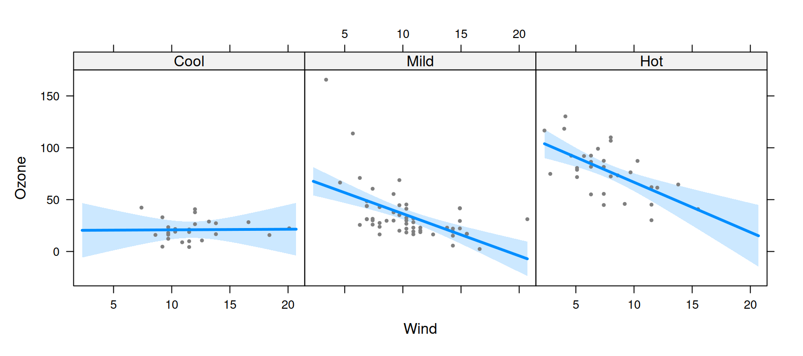
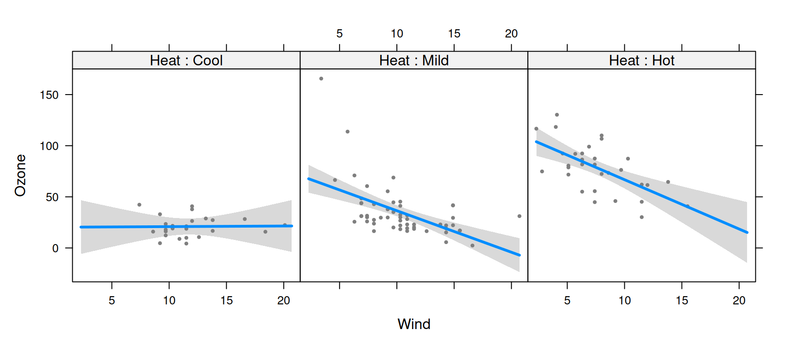
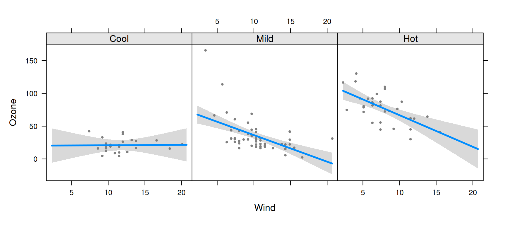
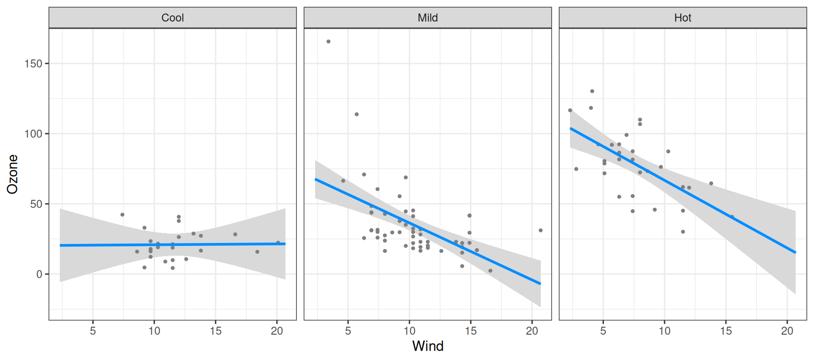
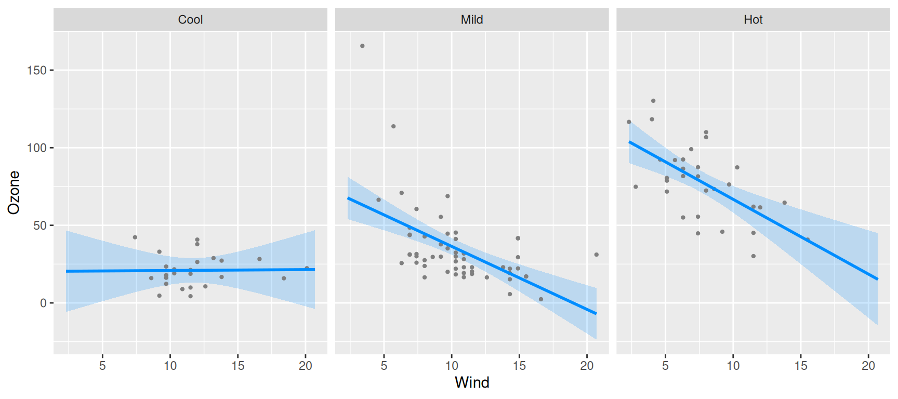

As was the case with nonlinear terms, the
relationship between x and y in a model with
interactions also (typically) depends on multiple coefficients and thus,
a visual summary tends to be much more readily understood than a numeric
one.
For models with interactions, we must simultaneously visualize the
effect of two explanatory variables. The visreg package
offers two methods for doing so; this page describes what we call
cross-sectional plots, which plot one-dimensional relationships
between the response and one predictor for several values of another
predictor, either in separate panels or overlaid
on top of one another. The package also provides methods for
constructing surface plots, which
attempt to provide a picture of the regression surface over both
dimensions simultaneously.
Let’s fit a model that involves an interaction between a continuous term and a categorical term:
airquality$Heat <- cut(airquality$Temp, 3, labels=c("Cool", "Mild", "Hot"))
fit <- lm(Ozone ~ Solar.R + Wind * Heat, data=airquality)We can then use visreg to see how the effect of wind on
ozone differs depending on the temperature:
Or alternatively, see how the effect of temperature depends on the wind level:

Note that, since Wind is a continuous variable, the
panels above are somewhat arbitrary. By default, visreg
sets up three panels using the 10th, 50th, and 90th percentiles, but the user can change both the number and the location of
these break points.
By default, visreg uses the lattice package
to lay out the panels. Thus, in order to change the appearance of these
sorts of plots, you may have to read the lattice
documentation for the relevant options, such as layout in
the above examples. Alternatively, you can use ggplot2 as the graphics engine by
specifying gg=TRUE:
visreg(fit, "Wind", by="Heat", gg=TRUE)
visreg(fit, "Heat", by="Wind", gg=TRUE)
In all of these plots, note that each partial residuals appears exactly once in the plot, in the panel it is closest to.
Options
For a numeric by variable, the breaks
argument controls the values at which the cross-sections are taken. By
default, cross-sections are taken at three quantiles (10th, 50th, and
90th), but a larger number can be specified:

If breaks is a vector of numbers, it specifies the
values at which the cross-sections are to be taken:

Graphical options: lattice
As mentioned above, when using lattice as the graphics
engine, the appearance of a plot can typically be changed by specifying
the appropriate lattice option, which gets passed along by
visreg. One exception is the appearance of lines, points,
and bands, which are specified just as they are
in base plots:

Another exception is the strip option;
visreg sets up the strip internally, which interferes with
the user passing the strip option along to
lattice. visreg does, however, explicitly
provide the strip.names option:

You can also explicitly specify the labels for each strip:
Other aspects of the strip’s appearance, such as the background
color, can be set with calls to the lattice package’s
trellis.par.set:
lattice::trellis.par.set(strip.background=list(col="gray90"))
visreg(fit, "Wind", by="Heat", layout=c(3,1))
Graphical options: ggplot2
As discussed on the ggplot2 page,
most ggplot2 options are specified via additional
components to the plot, such as:
visreg(fit, "Wind", by="Heat", gg=TRUE) + theme_bw()
The exception, again, is the appearance of points/lines/bands, which
are specified with the usual visreg arguments:
